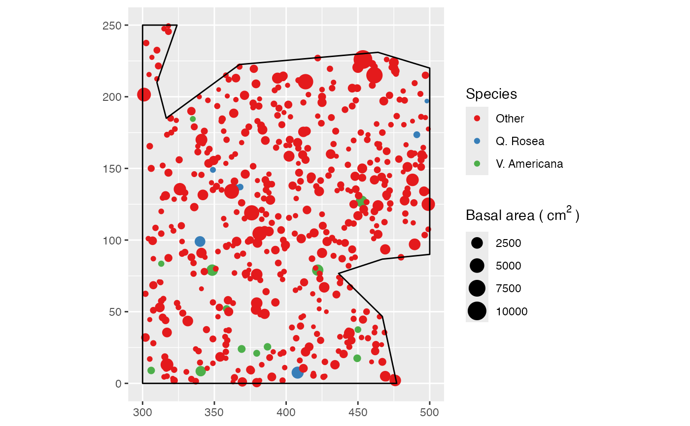
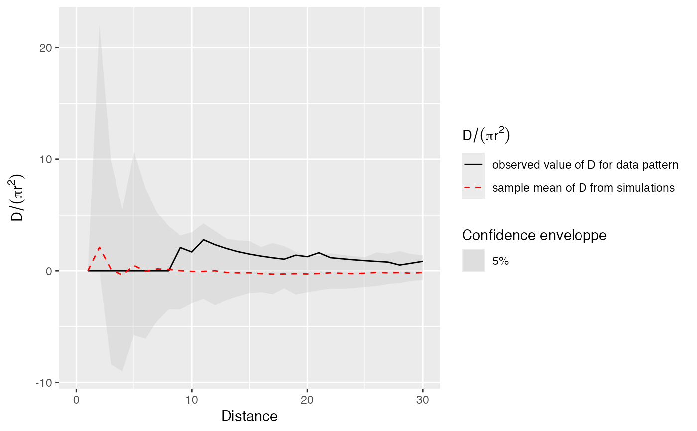

Estimation of the confidence envelope of the D function under its null hypothesis
DEnvelope.RdSimulates point patterns according to the null hypothesis and returns the envelope of D according to the confidence level.
Usage
DEnvelope(X, r = NULL, NumberOfSimulations = 100, Alpha = 0.05,
Cases, Controls, Intertype = FALSE, Global = FALSE)Arguments
- X
A point pattern (
wmppp.object).- r
A vector of distances. If
NULL, a sensible default value is chosen (512 intervals, from 0 to half the diameter of the window) following spatstat.- NumberOfSimulations
The number of simulations to run, 100 by default.
- Alpha
The risk level, 5% by default.
- Cases
One of the point types
- Controls
One of the point types.
- Intertype
Logical; if
TRUE, D is computed as Di in Marcon and Puech (2012).- Global
Logical; if
TRUE, a global envelope sensu Duranton and Overman (2005) is calculated.
Details
The only null hypothesis is random labeling: marks are distributed randomly across points.
This envelope is local by default, that is to say it is computed separately at each distance. See Loosmore and Ford (2006) for a discussion.
The global envelope is calculated by iteration: the simulations reaching one of the upper or lower values at any distance are eliminated at each step. The process is repeated until Alpha / Number of simulations simulations are dropped. The remaining upper and lower bounds at all distances constitute the global envelope. Interpolation is used if the exact ratio cannot be reached.
Value
An envelope object (envelope). There are methods for print and plot for this class.
The fv contains the observed value of the function, its average simulated value and the confidence envelope.
References
Duranton, G. and Overman, H. G. (2005). Testing for Localisation Using Micro-Geographic Data. Review of Economic Studies 72(4): 1077-1106.
Kenkel, N. C. (1988). Pattern of Self-Thinning in Jack Pine: Testing the Random Mortality Hypothesis. Ecology 69(4): 1017-1024.
Loosmore, N. B. and Ford, E. D. (2006). Statistical inference using the G or K point pattern spatial statistics. Ecology 87(8): 1925-1931.
Marcon, E. and F. Puech (2017). A typology of distance-based measures of spatial concentration. Regional Science and Urban Economics. 62:56-67.
Examples
data(paracou16)
# Keep only 20% of points to run this example
X <- as.wmppp(rthin(paracou16, 0.2))
autoplot(X,
labelSize = expression("Basal area (" ~cm^2~ ")"),
labelColor = "Species")

# Calculate confidence envelope (should be 1000 simulations, reduced to 20 to save time)
r <- 0:30
NumberOfSimulations <- 20
Alpha <- .05
# Plot the envelope (after normalization by pi.r^2)
autoplot(DEnvelope(X, r, NumberOfSimulations, Alpha,
"V. Americana", "Q. Rosea", Intertype = TRUE), ./(pi*r^2) ~ r)
#> Generating 20 simulations by evaluating expression ...
#> 1, 2, 3, 4, 5, 6, 7, 8, 9, 10, 11, 12, 13, 14, 15, 16, 17, 18, 19, 20.
#>
#> Done.
